|
Jorkke's Smart Pillbox:
Here you will find discussion on:
|
|
|
Basic Usage
|
|
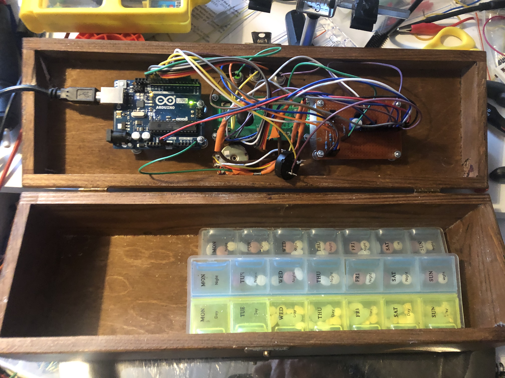
Smart Pillbox knows when it is time for you to take your medicine, and reminds you in case you seem to forget.
It looks like you can see on the right when opened - impressive, huh? :-) Yes, there is a tilt sensor on the cover of the box, and
therefore
the Arduino knows when was the last time the box was opened.
The main difference to using your mobile phone as a reminder is that this box alarms only when there is a need to - and that the
only way to turn off the reminder is to physically open the cover of the Pillbox.
There is a small lcd-display, three leds and a turn-knob & a switch for entering data. The screws on the cover -
actually I am rather pleased to the "cyber-punkish" look they give to the box.
I wrote the software for the box assuming that the medication is taken twice a day, on equal 12-hour intervals, but it can be easily
customized for any individual needs. The basic usage of the box goes like this:
-
When powering up the box, the user must enter the remaining time (in hours and minutes) for the next
medication. This is done by turning the knob, and pushing the switch when the right number is shown on the lcd-screen.
-
When waiting for the next alarm, the display shows not only the remaining time to the alarm, but also
the message "Don't Panic" with big, friendly letters :-) You can move the box around, open it etc. and
it will not get confused as long as the power is connected.
-
Two hours before the alarm, the yellow led turns on and the LCD-display shows the first warning message.
-
One hour before the alarm, the yellow led starts to blink and the LCD-display shows the second warning message.
-
At the time of the alarm, the red led turns on and the LCD-display shows the alarm message. The display starts to show
how much time has passed since the alarm.
-
One hour after the alarm, the red led starts to blink, the LCD-display shows the second alarm message, and the box starts to make a buzzing sound.
-
Two hours after the alarm, the box gives up. The software resets itself, it does the power-up routine again,
and as a result, all the led's start to blink and the box expects the user to enter the time for the next alarm.
If the lid of the box is opened while any warning or alarm is active, it goes back to waiting for the next alarm, taking into account the time difference. Thus,
if you want to take your medicine every day at 9 AM & PM, and you take it a bit late in the evening - for example at 10 PM - it knows you were late and gives the next
alarm at the usual time, at 9 AM.
|
|
Parts list
|
If you are not familiar with Arduino, I highly recommend you to get familiar with it by purchasing the
Arduino Starter Kit which not only teaches you how to use the Arduino environment
for application development, but also comes with most of the parts you need for the Smart Pillbox:
-
The Arduino Uno itself.
-
A LCD1602 display. If you purchase this separately, don't
buy the I2C-version unless you know what you are doing (the instructions below do not apply to it).
-
A 10K potentiometer for adjusting the contrast of the LCD. I attached mine to the circuit board, but you might want to
consider adding it to the panel so that the user can adjust the contrast easily - but please note that the starter kit
does not come with this kind of a panel-mountable potentiomenter.
-
A tilt/switch sensor for detecting when the lid of the box is opened.
-
A piezo buzzer for giving a buzz-sound when needed.
-
A few leds and resistors - note that in order to install leds into the panel, you need to have the "collars" also. The Arduino
starter kit does not come with these collars. It might be a good idea to buy an assortment of leds and another assortment of resistors
which you could then use in your future projects also, instead of purchasing these separately for every project.
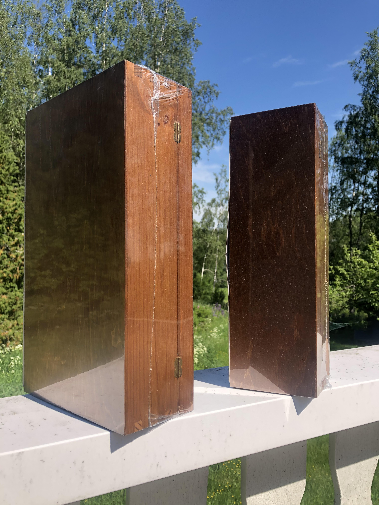
In addition to these, you need also:
-
A suitable box where you store your pills. I used a wooden wine-bottle box which I found from the local liquor store :-) They
sell also two-bottle versions of these - I do find these boxes rather inspiring. Expect to see more projects based on them in the future!
-
Dupont-wires for connections between the Arduino/LCD/your circuit board. You'll need both Male-Male and Male-Female - versions.
I did the mistake that I had only 20cm long versions available when building - those get the job done, but if you want a neat result
using as little space as possible, you might want to have shorter 10cm long versions also.
Please note also that sometimes the easiest way to get a job done is to cut the Dupont-wire in half, and to solder the other
end directly where it is supposed to be.
-
Male/Female Pin Header connectors. You could solder all the wires, or you could use Dupont-wires and these connectors.
Sometimes it may be difficult to find out what exactly should you buy - if you go to a site selling electronics components such as
Mouser for example and search for "Pin header", you get pages and pages of matches with different
specifications. A good way to get started is to google for "Arduino pin header" for example, and that should guide you to the right direction.
-
A stripboard or a veroboard where you build your (simple) circuit. Most of the connections into this board are related to
delivering either 5V voltage or the ground. In some cases this happens via a resistor - you can either solder those resistors
into the board, or you could solder the resistors directly to the wires. Personally I used both approaches here.
-
A potentiometer and a switch to the panel which you'll be using for entering the hours and minutes. The idea is simple:
A linear potentiometer can split the voltage between 0V and 5V into almost as many parts as you like. So if we want to enter the
value for minutes for example - we should be able to read a value between 0-59. That means we should be able to divide the 5V voltage
into 60 separate "slots". A potentiometer can do just that (with a little help from Arduino's 10-bit AD-converter).
While doing this project, I did not happen to have these parts at hand, so I "disassembled" an old soldering station and took these parts from there.
Unfortunately the switch was a "power switch" - meaning it stays in "off"-position, or in the "on"-position. That complicated the software a little bit,
as I had to ensure that the switch is in the "off"-position before starting to enter the numerical data.
What you actually want to have here is a push switch, a.k.a momentary switch. The Arduino startup kit
comes with a few of those, but unfortunately they are meant to be attached to the circuit board. It is possible to use them also in the panel, if you
attach the circuit board right to the other side of the panel, but it is much easier to use a switch which is wired to the panel. These kinds of
switches are typically mounted to the panel with a nut.
|
|
Aspects in mechanics
|
For me personally, dealing with mechanics is like using muscles that I did not know exist in my body while visiting the gym. For example:
-
You measure where the leds should be in the cover, you mark their places with a pencil, you need 7mm holes so you pick up a 7mm drill bit -
and as a result: the leds are not in a straight line :-(. This happened to me twice until I realized I have to ask for an advice from my >80 years old father,
who has built a house, a sailing boat and, well, practically everything by himself. His advice: start drilling with a smaller drill bit, because it is more accurate.
Once you have marked the proper place for the hole with such, then it is much more easier to drill with the actual drill bit to the same place.
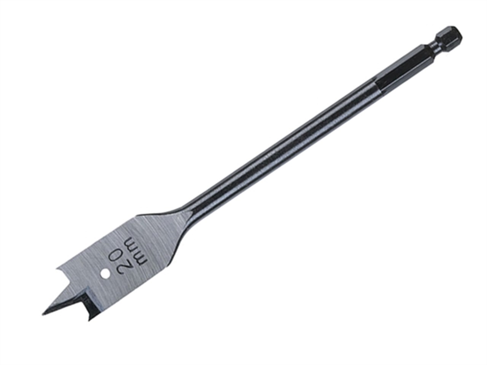
-
How do you create an opening in the cover for the lcd-display? For example: first you drill into the corners with a large ~20mm drill bit or like. Then you
use a small saw - my pocket knife contained a suitable one. Then you use files
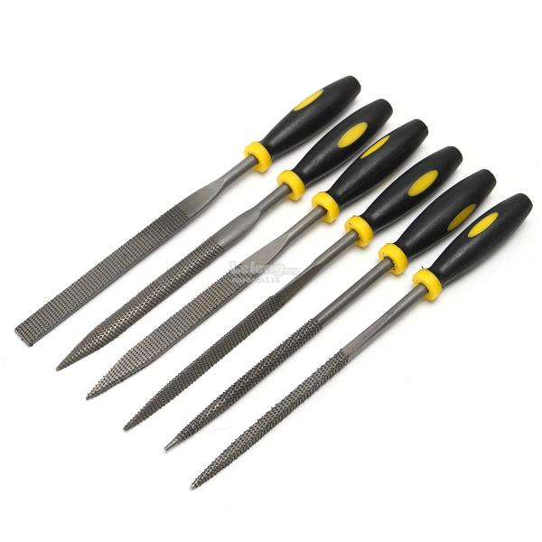
- get an assortment of these.
-
How do you attach the Arduino, the lcd-display, your own circuit board? You need nuts, screws and standoff-spacers - all size M3.
These are hard to find from usual hardware-stores, so it would be a good idea to order these beforehand. The standoff-spacers give
you also the possibility to place your own circuit board on top of Arduino (or vice versa) - it would be a good idea to think for a
moment how you plan to place these before starting to assemble these.
-
Sooner or later someone will pull your Smart Pillbox from the power wire. Attach it well enough so that it does not break loose as a result of this.
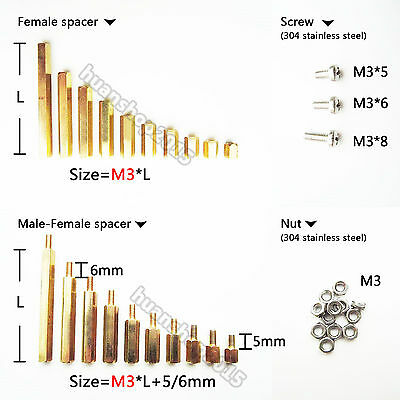
|
|
Electronic design
|
If you have the Arduino Starter Kit, most of the electronics design comes straight from the project 11 "Crystal Ball", which utilizes
both the tilt sensor and the LCD screen. It would be a good idea to familiarize yourself with it before going further here.
As this project is so simple HW-design-wise, most of the "design" is just agreeing on the conventions on what goes where in Arduino's digital
and analog inputs/outputs, so that the software can be written accordingly. So let's get started with those conventions:
LCD screen in itself:
-
These connections are either to the 5V or ground, either directly or via a resistor. Create a veroboard or a stripboard for these purposes -
taking the 5V & the Ground from the Arduino into a "power rail" that you have created into the stripboard with a pin header connector.
Also, when attaching the LCD screen to the panel, remember which way it should go so that the text is not shown upside-down.
-
The LCD has 16 pins. Mine are numbered from 1 to 16. Connect the two outmost ones, pin 1 and pin 16, to the Ground.
-
Connect pin 5 ("RW") to the Ground.
-
Connect pin 2 (typically "Vcc" or "Vdd") to +5V (the text labels for the pins may vary).
-
Connect pin 15 ("LED+" or "A") first into a 220 ohm resistor, and from there to +5V.
-
Take a 10K potentiometer. It has three pins. Connect the outermost pins of the potentiometer to +5V and Ground, and the middle pin to LCD's pin 3 ("V0") -
this is the contrast adjust.
LCD and the Arduino:
-
Connect Arduino Digital Pin 2 to LCD Pin 14 ("D7").
-
Connect Arduino Digital Pin 3 to LCD Pin 13 ("D6").
-
Connect Arduino Digital Pin 4 to LCD Pin 12 ("D5").
-
Connect Arduino Digital Pin 5 to LCD Pin 11 ("D4").
-
Connect Arduino Digital Pin 11 to LCD Pin 6 ("EN/E").
-
Connect Arduino Digital Pin 12 to LCD Pin 4 ("RS").
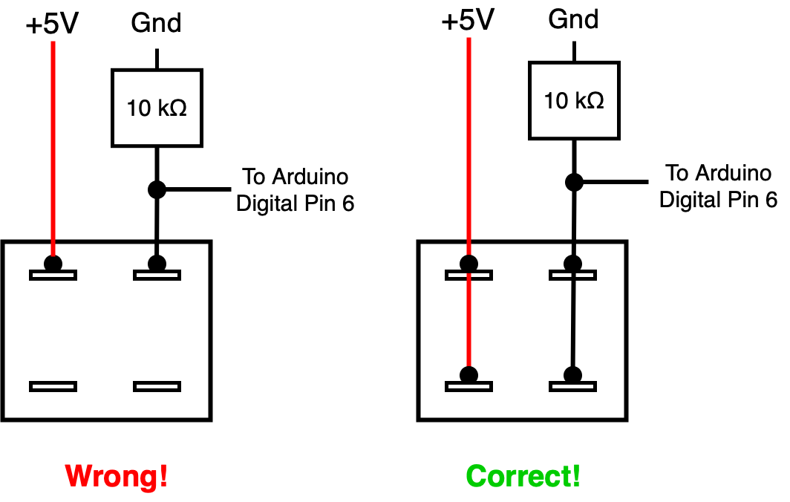
The Tilt sensor:
-
Arduino's tutorial mentions that the tilt sensor is from Assemtech, but the link
to the datasheet does not work anymore. Some detective work revealed that it is actually a
Comus RBS040100.
-
Please note that this sensor has four pins. If you connect only two of those into your circuit, the results will be non-satisfactory.
Please see the picture on the right for the correct way to connect, also utilizing a 10K resistor.
-
Thus the Tilt sensor is connected to the Arduino Digital Pin 6, as shown.
The Piezo buzzer:
-
Connect one of the pins of the Piezo to Arduino Digital Pin 8, and the other pin to the ground. For more discussion on usage of the piezo,
see project 6 "Light Theremin" in the Arduino Projects Book which comes with the Arduino Starter Kit.
The LED's:
For each LED, connect the shorter pin (the cathode) to the ground through a 220 Ohm resistor. For the anodes (the longer pins):
-
For the green LED: connect the anode to Arduino Digital Pin 13.
-
For the yellow LED: connect the anode to Arduino Digital Pin 10.
-
For the red LED: connect the anode to Arduino Digital Pin 9.
The potentiometer for selecting numerical data:
The only available potentiometer I had was a 1K one, which worked fine for this purpose:
- Connect the two outermost pins of it to the ground and to the +5V power.
- Connect the middle pin to Arduino's Analog Input A5.
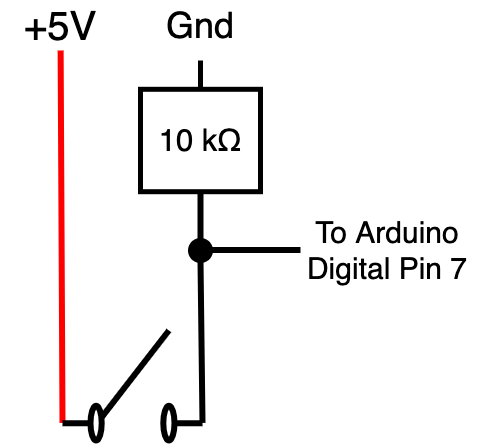
The Enter-switch for entering numerical data:
I used a simple on-off switch, but the same code and circuit works also for a momentary switch which should be preferred:
- Connect the first pin to +5V.
- Connect the second pin to Arduino's Digital Pin 7 like you see on the image on the right, utilizing also the 10K resistor.
How it looks like:
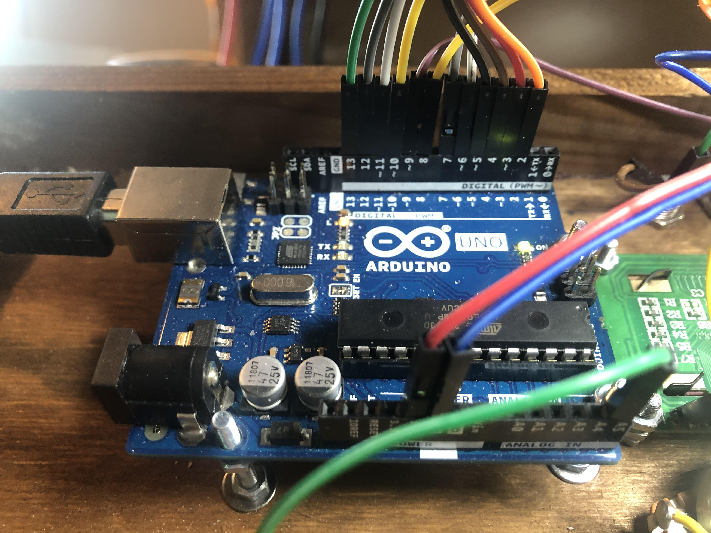
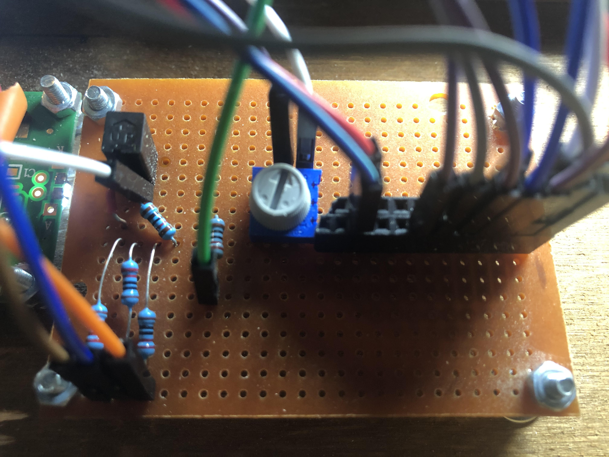
On the left you can see the Arduino when mounted into its place. The Digital I/O slots are pretty well utilized,
whereas only one Analog slot is in use. The red and the blue wire give the +5V and the ground to the stripboard.
On the right you can see the stripboard. On the bottom-left, the three wires and resistors connect the LED's to the ground. On top of them
you can see the tilt switch. The trimmer is for adjusting the contrast of the LCD, and the pin header shares the +5V voltage and the ground.
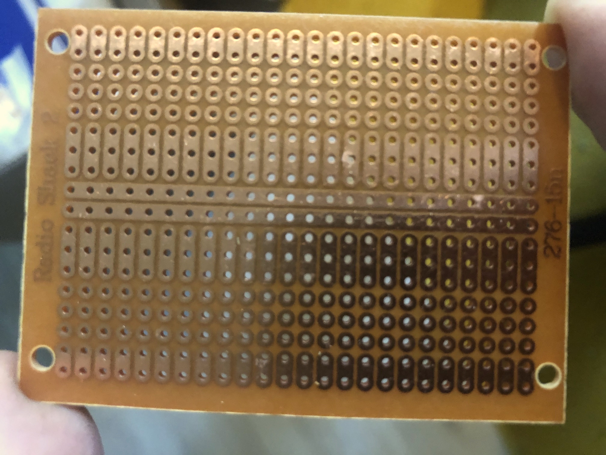
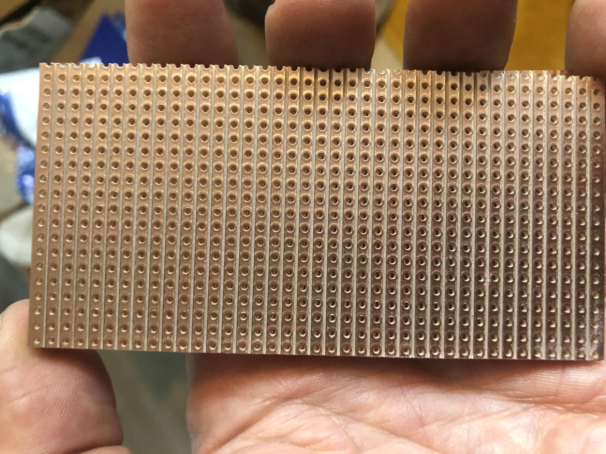
I used a stripboard like you can see on the left for this project. Usually I choose veroboards like you can see on the right (the idea is that
you create your own circuits by cutting the stripes accordingly), but for something as simple as this, I considered the board on the left as more
straightforward to use.
|
|
Software:
|
Software for the Smart Pillbox is rather straightforward. The most nontrivial aspects were:
-
How to measure time accurately. The first idea that comes to mind usually is to utilize the delay-function, executing something like this:
while(1) // this loop executed every second
{
delay(1000); // one second
/* do stuff here... */
}
However, this approach has the problem that although the delay-function execution lasts for one second, the rest of the loop takes time also,
and thus the execution of the loop takes more than one second. A much better approach is to utilize the millis-function like this:
unsigned long previousTime = millis();
while(1) // this loop executed every second
{
while ((millis() - previousTime) < 1000L){}; // one second
previousTime = millis();
/* do stuff here... */
}
The millis() - function returns the number of milliseconds passed since the Arduino began running the current program as an
unsigned long int, and it will overflow after approx. 50 days. This code handles also the overflow correctly.
-
How to measure analog input correctly. The key aspects are:
-
Use a
delay(1) or delay(10) after each Analog read.
-
Use the
map() -function provided by the Arduino environment for mapping the read values (between 0-1023) to the range
you desire, like 0-23 or 0-59.
-
Be prepared for errors - for example I found that in extreme conditions (room temperature over 30 degrees Celsius, plus
using a low-quality USB power supplly) the higher range of the read voltage values was in practice non-usable, so I had to
scale the map-function accordingly.
You can download the software from this link.
|
|
Improvement possibilities:
|
Some ideas for further improvements:
-
Decreasing sensitivity of the Analog Inputs to disturbances.
It was a surprise to me how sensitive the analog inputs are to low-quality input power.
With IPhone's USB charger the analog input worked just fine, but with a cheap no-name USB charger it did not.
I need to think about adding bypass capacitors or like.
-
Battery backed-up real time clock, such as DS3231.
This would allow the Smart Pillbox to recover from a power failure without configuring the alarm interval again.
-
Make it prettier. Good-quality woodwork is difficult at least for me. For example, take a look what the opening
for the LCD currently looks like:
I did not have proper files at the time, and... anyways, in order to fix somethig like this, one technique could
be to add small wooden stripes around the display, kind of a "frame", to hide the irregularities.
It's also a good idea not to attach your LCD-screen to the cover before you are done with the woodwork, as
otherwise the sawdust may get into the display...
|
|
|
|
| First release of this page: June 21, 2020 |
Back to main page
|